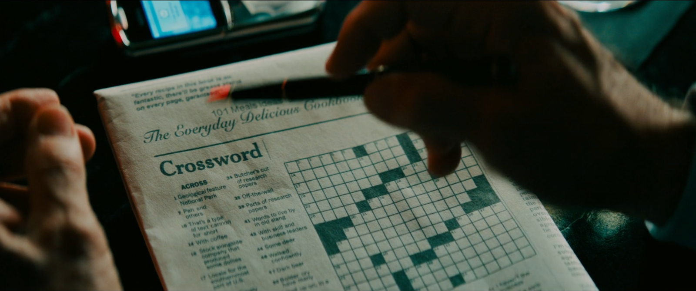
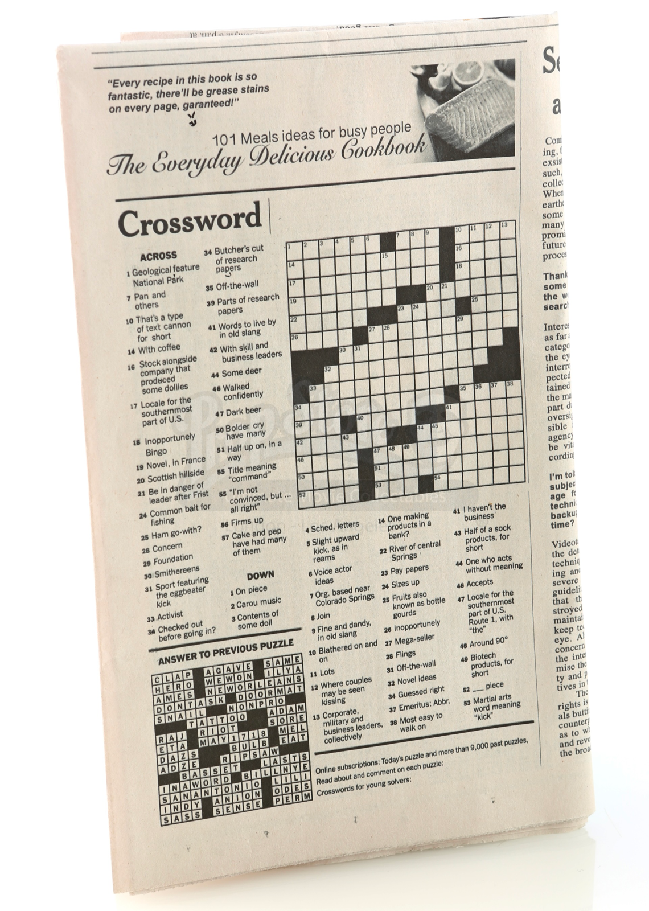
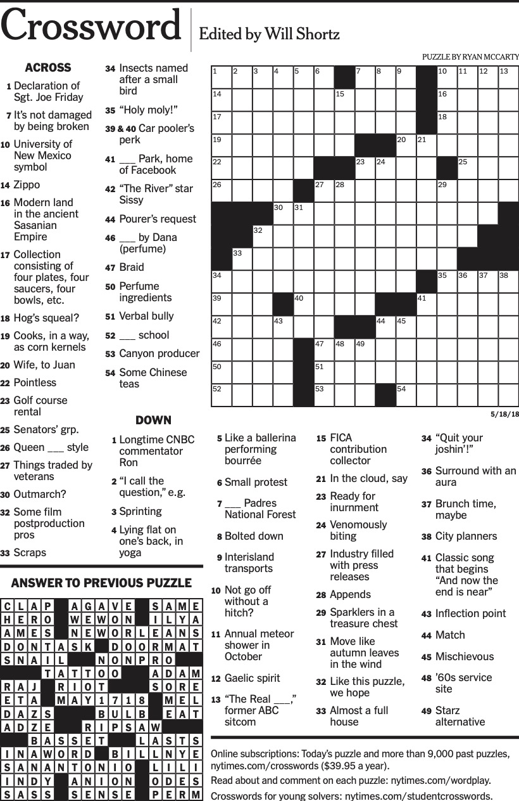

Real grids turned into props
John Wick: Chapter 3 - Parabellum
Crossword by Ryan McCarty, New York Times, May 18, 2018
Real grid turned into a prop newspaper



Real grids turned into props
Real grid turned into a prop newspaper


